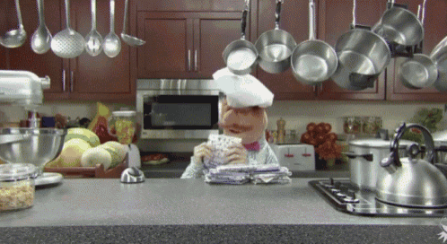

About Food Dudes
Food Dudes have created an interactive website with a game called 'Mystery Munch' to encourage food lovers to cook at home more, and to pull ourselves away from takeaway culture. Users can select their diet type and their preferred meal choice for our food finder to generate or direct you to a tantalising recipe tailored for your tastebuds.
Now start the game and get cooking!

This website was created for the CodeFirst:Girls Beginners coding course by Abida, Deksan and Thamanna.